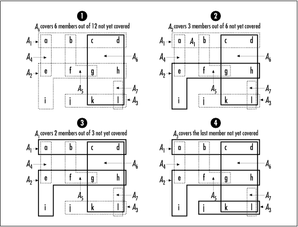

7.4 Set Example: Set Covering
Set covering is an optimization problem that
nicely models many problems of combinatorics and resource selection. Here is the idea: given a set S and a set P of subsets A1 to An of S, set C, which is composed of one or more
sets from P, is said to cover S if each member in S is contained in at least one of the
subsets in C; in addition,
C contains as few sets from
P as possible.
As an example, imagine trying to form a team
from a large set of candidate players, each with a certain set
of skills. The goal is to form the smallest team possible
possessing a certain set of skills overall. That is, for any
skill required by the team as a whole, at least one player on
the team must possess the skill. Let S be the skills that must be present
on the team, and let P be the
sets of skills possessed by various candidate players. The
various player skill sets in P
that are placed in set C
together must cover all of the skills in set S. But remember, we must select as
few players as possible.
The algorithm presented here for set covering
is an approximation algorithm (see Chapter
1). It does not always obtain the best solution, but it
does come within a logarithmic bound. The algorithm works by
repeatedly picking a set from P
that covers the most members not yet covered in S. In other words, it tries to cover
as much of S as it can as early
as it can. Thus, the algorithm is greedy (see Chapter
1). As each set is selected from P, it is removed, and its members are
removed from S as well. When
there are no members left to cover in S, the cover set C is complete.
Let's look at finding the optimal covering of
a set of twelve skills S = {a,
b, c, d, e, f, g, h, i, j, k, l} considering a set of seven
candidate players P = {A1, …, A7}. The players in P have the following assortments of
skills: A1 = {a, b,
c, d}, A2 = {e, f,
g, h, i}, A3 = {j,
k, l}, A4 = {a, e},
A5 = {b, f, g},
A6 = {c, d, g, h, k,
l}, and A7 = {l}.
The optimal covering is C =
{A1, A2, A3}. The algorithm
presented here selects the set C = {A6, A2, A1, A3} (see Figure
7.2).

Examples Example
7.3 and Example
7.4 present a function, cover, that determines a nearly
optimal covering of S
considering the subsets A1 to An in P. The function has three arguments:
members is the set S to be covered,
subsets is the set of subsets in P, and covering is
the set C returned as the
covering. The function modifies all three sets passed to it,
so copies should be made before calling the function, if
necessary.
To begin, covering is
initialized by calling set_init. The outermost loop iterates as long as
there are noncovered members in members and
the algorithm has not run out of subsets for the covering.
Inside this loop, during each iteration, it finds the set in
subsets that produces the largest intersection
with members. It then adds this set to the
covering and removes its members from members.
Last in the loop, the selected set is removed from
subsets. If the outermost loop terminates with
members not empty, then a complete covering
was not possible using the sets in subsets.
This is also the case if during any iteration none of the sets
in subsets intersects with
members. The function cover returns if it finds a covering,
1 if a covering is not possible, or -1 otherwise.
The runtime complexity of cover is O (m
3), where m
is the initial number of members in members.
This occurs when there is exactly one subset in
subsets for each member in
members; consequently, there are m subsets. In this case, set-intersection runs in O (m)
time because each subset contains only one member to traverse
when computing the intersection with members.
Thus, the inner loop of cover
is O (m2) and this loop is
executed m times.
Example 7.3.
Header for Set Covering /*****************************************************************************
* *
* -------------------------------- cover.h ------------------------------- *
* *
*****************************************************************************/
#ifndef COVER_H
#define COVER_H
#include "set.h"
/*****************************************************************************
* *
* Define a structure for subsets identified by a key. *
* *
*****************************************************************************/
typedef struct KSet_ {
void *key;
Set set;
} KSet;
/*****************************************************************************
* *
* --------------------------- Public Interface --------------------------- *
* *
*****************************************************************************/
int cover(Set *members, Set *subsets, Set *covering);
#endif
Example 7.4.
Implementation of a Function for Set Covering /*****************************************************************************
* *
* -------------------------------- cover.c ------------------------------- *
* *
*****************************************************************************/
#include <stdlib.h>
#include "cover.h"
#include "list.h"
#include "set.h"
/*****************************************************************************
* *
* --------------------------------- cover -------------------------------- *
* *
*****************************************************************************/
int cover(Set *members, Set *subsets, Set *covering) {
Set intersection;
KSet *subset;
ListElmt *member,
*max_member;
void *data;
int max_size;
/*****************************************************************************
* *
* Initialize the covering. *
* *
*****************************************************************************/
set_init(covering, subsets->match, NULL);
/*****************************************************************************
* *
* Continue while there are noncovered members and candidate subsets. *
* *
*****************************************************************************/
while (set_size(members) > 0 && set_size(subsets) > 0) {
/**************************************************************************
* *
* Find the subset that covers the most members. *
* *
**************************************************************************/
max_size = 0;
for (member = list_head(subsets); member != NULL; member =
list_next(member)) {
if (set_intersection(&intersection, &((KSet *)list_data(member))->set,
members) != 0) {
return -1;
}
if (set_size(&intersection) > max_size) {
max_member = member;
max_size = set_size(&intersection);
}
set_destroy(&intersection);
}
/**************************************************************************
* *
* A covering is not possible if there was no intersection. *
* *
**************************************************************************/
if (max_size == 0)
return 1;
/**************************************************************************
* *
* Insert the selected subset into the covering. *
* *
**************************************************************************/
subset = (KSet *)list_data(max_member);
if (set_insert(covering, subset) != 0)
return -1;
/**************************************************************************
* *
* Remove each covered member from the set of noncovered members. *
* *
**************************************************************************/
for (member = list_head(&((KSet *)list_data(max_member))->set); member !=
NULL; member = list_next(member)) {
data = list_data(member);
if (set_remove(members, (void**)&data) == 0 && members->destroy != NULL)
members->destroy(data);
}
/**************************************************************************
* *
* Remove the subset from the set of candidate subsets. *
* *
**************************************************************************/
if (set_remove(subsets, (void **)&subset) != 0)
return -1;
}
/*****************************************************************************
* *
* No covering is possible if there are still noncovered members. *
* *
*****************************************************************************/
if (set_size(members) > 0)
return -1;
return 0;
}
|